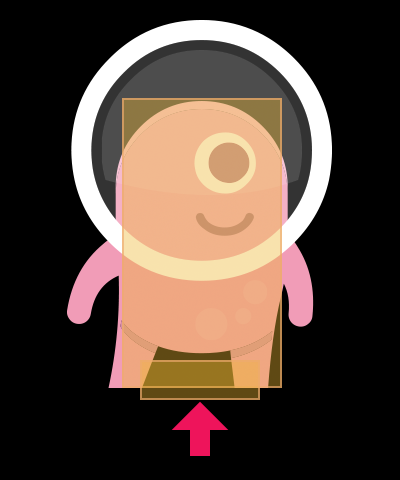
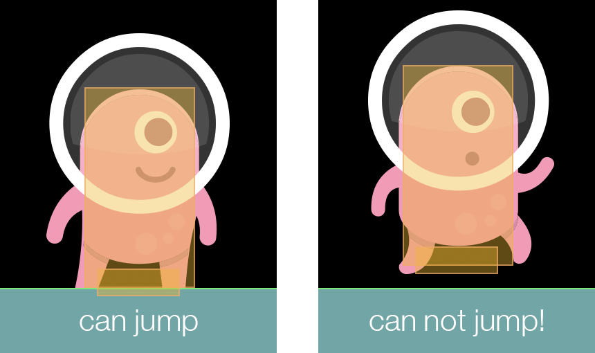

For a 2D platformer game in which a character can jump, you’ll almost always want to ensure that your player’s character can only jump when standing on solid ground. Even in games which allow for the popular “double jump” or “air jump,” it’s almost always expected that the player is standing upon a solid foundation to make the initial jump.
Game developers tend to approach this scenario differently. One option is to check if the character’s vertical velocity is low enough to indicate that it’s on the ground — in other words, if the character isn’t falling downward or already moving upward (jumping), it’s reasonably likely that the character is standing on solid ground. Another option, following a jump, is to use a short timer and set a boolean flag so that the character can’t jump again until it returns to the ground. While these are valid approaches, they are more complicated than necessary, they’re potentially unreliable, and they may introduce other jump handling issues.

A cleaner and more reliable approach — although it takes a bit more
Because this element will be set as a sensor type object, it won’t physically interact with solid ground, merely overlap it, and when that overlap occurs over a ground object, we can assume that the character is firmly standing on solid ground and it’s safe to jump.
Optionally, as shown here, the width of this sensor can be thinner than the character’s overall body width to prevent a jump while teetering on the edge of a platform. However, this and other specific decisions you make about the sensor element’s width/placement relative to the character’s main body element are highly dependent on your unique game design.
Terrain can be constructed in various ways. For this tutorial, we’ll simply use a vector rectangle with a static physical body applied. We’ll also add a objType property of "ground" to the object — this will allow us to limit player jumps solely from solid ground, not off other horizontal objects like pools of liquid or pits of spikes (clearly those game elements would need to be handled separately and differently).
-- Set up physics engine
local physics = require( "physics" )
physics.start()
physics.setDrawMode( "hybrid" )
-- Create ground object
local cw, ch = display.actualContentWidth, display.actualContentHeight
local ground = display.newRect( display.contentCenterX, ch-64, cw, 64 )
ground:setFillColor( 0.4, 0.4, 0.8 )
ground.objType = "ground"
physics.addBody( ground, "static", { bounce=0.0, friction=0.3 } )
The character can be constructed of two body elements as follows. Notice that the second body element is a sensor and it’s declared using the box shape method which lets us offset it vertically from the main body’s center point:
-- Create character
local character = display.newRect( display.contentCenterX, ground.y-150, 80, 120 )
character:setFillColor( 1, 0.2, 0.4 )
physics.addBody( character, "dynamic",
{ density=1.0, bounce=0.0 }, -- Main body element
{ box={ halfWidth=30, halfHeight=10, x=0, y=60 }, isSensor=true } -- Foot sensor element
)
character.isFixedRotation = true
character.sensorOverlaps = 0
Observe that the foot sensor element is declared 2 will be used in the collision detector function to check that the sensor
Notice that we’ve also added a sensorOverlaps counter to the character to manage its ability to jump. A counter true/false)true/false boolean property instead of a counter would result in unexpected behavior as the sensor exits one ground object and changes to false, even though physically the character is standing on the second ground object and can legally jump. Thus, we can use a counter which increments and decrements as the sensor interacts with one or more ground objects.
The jump procedure is simple enough — when the touch initially registers, we just check if the sensorOverlaps counter is greater than 0 and jump. For simplicity in this tutorial, we use global Runtime touch detection to trigger a jump, and the jump itself is a basic upwards linear impulse immediately following the character’s linear y velocity being reset to 0.
local function touchAction( event )
if ( event.phase == "began" and character.sensorOverlaps > 0 ) then
-- Jump procedure here
local vx, vy = character:getLinearVelocity()
character:setLinearVelocity( vx, 0 )
character:applyLinearImpulse( nil, -75, character.x, character.y )
end
end
Runtime:addEventListener( "touch", touchAction )
The final aspect is the collision handler function. Here, we just need to check the following:
The colliding body element index (event.selfElement) is 2 — this indicates that the foot sensor has registered the collision event, not the character’s main body element.
The terrain element is a ground object objType of "ground")
Inside this conditional clause, we perform one of the following actions:
On the "began" phase (foot sensor has entered a ground object), we increment the sensorOverlaps counter.
On the "ended" phase (foot sensor has exited a ground object), we decrement the sensorOverlaps counter.
local function sensorCollide( self, event )
-- Confirm that the colliding elements are the foot sensor and a ground object
if ( event.selfElement == 2 and event.other.objType == "ground" ) then
-- Foot sensor has entered (overlapped) a ground object
if ( event.phase == "began" ) then
self.sensorOverlaps = self.sensorOverlaps + 1
-- Foot sensor has exited a ground object
elseif ( event.phase == "ended" ) then
self.sensorOverlaps = self.sensorOverlaps - 1
end
end
end
-- Associate collision handler function with character
character.collision = sensorCollide
character:addEventListener( "collision" )

Now, if you run this code, you’ll see how the foot sensor’s overlapping state with the ground controls whether character can or can’t jump. Essentially, the foot sensor serves as a permanent “foundation” which you can use to test if the character is standing upon solid ground.
The method used in this tutorial is just one of several ways to handle the “allowing jumps” issue, and by no means is it the only solution or even best solution for every game. Hopefully, though, this simple method can be adjusted and tailored to your game, letting you abandon vertical velocity checks, jump timers, and other
Character art in this tutorial is courtesy of Kenney. Kenney game studio supports other developers by creating free game assets and high quality learning material.